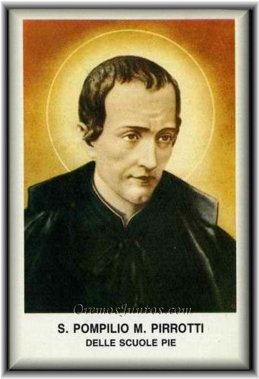

Conocé a San Pompilio

Conocé la vida, obra, testimonio y legado de San Pompilio María Pirrotti. La fe debe convertirse en servicio, solidaridad, humildad y amor hacia los demás.

Conocé la vida, obra, testimonio y legado de San Pompilio María Pirrotti. La fe debe convertirse en servicio, solidaridad, humildad y amor hacia los demás.